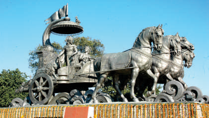
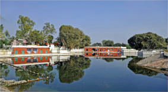
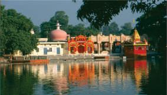
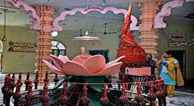
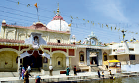
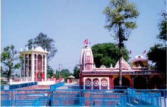

NCICEC 2019

26th National Conference on Internal Combustion Engines and Combustion
26th National Conference on Internal Combustion Engines and Combustion
 Kurukshetra is a place of religious pilgrimage and historical significance. It is the land of Mahabharata and place where sermons of 'Bhagwad Gita' were delivered. In medieval period, Thanesar, the old city, was the seat of power of Harshwardhana. Kurukshetra is well connected with rail/road. It is a railway junction on Delhi-Ambala section and is situated on National Highway No. 1 (G.T. Road). It is approximately 160 km from Delhi, 100 km from Chandigarh and 194 km from Shimla. NIT Kurukshetra is about 10 km from Pipli and 6 km from Kurukshetra railway station.
 Jyotisar, the birth place of Gita, is the most venerated place of Kurukshetra. It is believed to be the place where Krishna had deliverzed the eternal message of Bhagavadgita to Arjuna in the battle field of Mahabharata.
 Named after Lord Brahma, the creator, this huge water tank is believed to be created over the land, where Brahma had performed his first sacrifice. This tank is one of the largest man made bathing tank in Asia.
Named after Lord Brahma, the creator, this huge water tank is believed to be created over the land, where Brahma had performed his first sacrifice. This tank is one of the largest man made bathing tank in Asia.
 It is believed that on the occasion of every Amavasya the waters of all tirthas present on the earth assemble here. A holy dip taken in its waters during solar eclipse is considered highly meritorious and bears the sanctity of performing thousands of Aswamedha Yajnas.
 This temple of Kurukshetra is one out of the fifty one Shaktipithas of India. It is believed that right ankle of Sati fell here in the well which is known as Devikupa. Before Mahabharata battle Pandavas and Lord Krishna worshipped mother Goddess here for their victory in Mahabharata battle.
 The temple is dedicated to Lord Shiva, the presiding deity of the ancient city of Sthanvishwar presently known as Thanesar. Pandvas worshiped lord Shiva here for the victory in Mahabharata battle. Pushpabhuti, the founder of the Vardhana Empire of Thanesar named the capital of his kingdom after Sthanvishwar Shiva.
 After the fall of Bhishma on 10th day of Mahabharata battle, Arjuna created here a fountain of water with an arrow which quenched the thirst of Bhishma. Bhishma imparted the teachings of Rajdharama (statecraft) and Anushashan (discipline) to Yudhishthira and sung here 'Vishnu Sahshranama' the eulogy dedicated to lord Krishna.